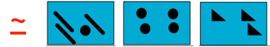
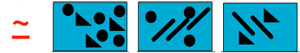
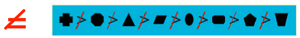

Shape
Shape ...
| Shape capacity = Unlimited
The capacity of a visual variable is defined as the number of different perceptible steps by human mind. The number of used values on the visual notation do not should be greater than to the visual variable capacity. |
The choice of the variable, which would be most appropriate to represent each aspect of information depends on its characteristics.
Shape's characteristics:
| Selective
If a mark changes in this variable and as an effect can be selected from the other marks easily the visual variable is said to be selective.
 |
| Associative
Several marks can be grouped across changes in other visual variables.
 |
| Quantitative
If the difference between two marks in this variable can be interpreted numerically, the visual variable is quantitative.
|
| Order
If the variable supports ordered reading it is an ordered visual variable. This means that a change could be read as more or less (e.g. in size you can order marks according to their area).
 |
| Lenght
The length defines how many values the variable features. For example how many shades of grey can be recognized?
|